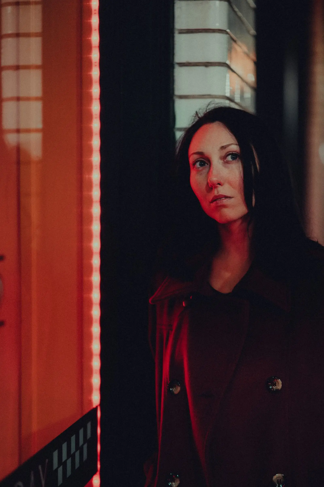
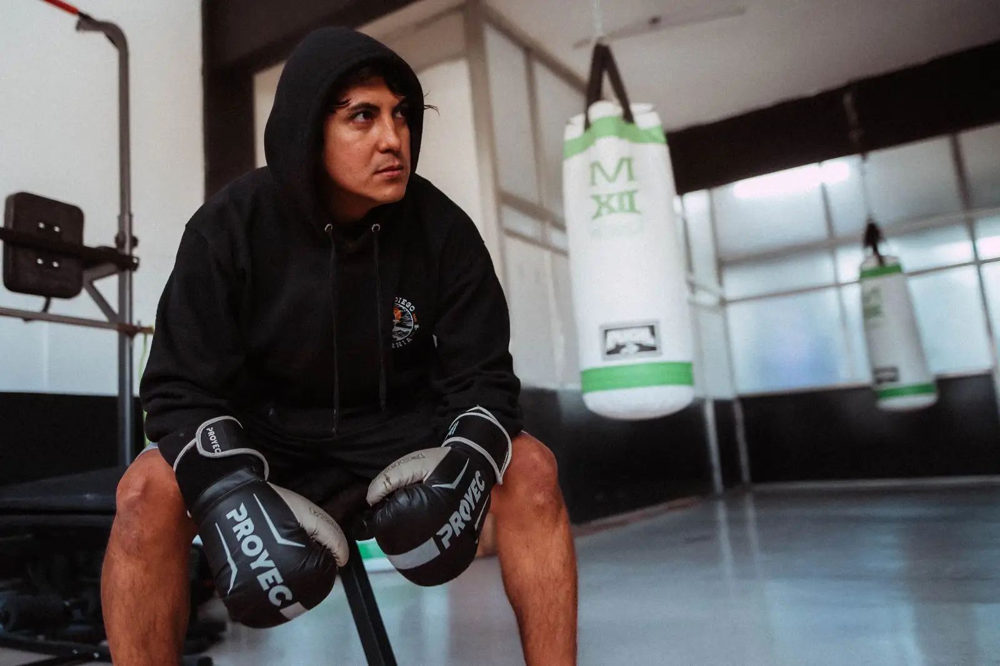
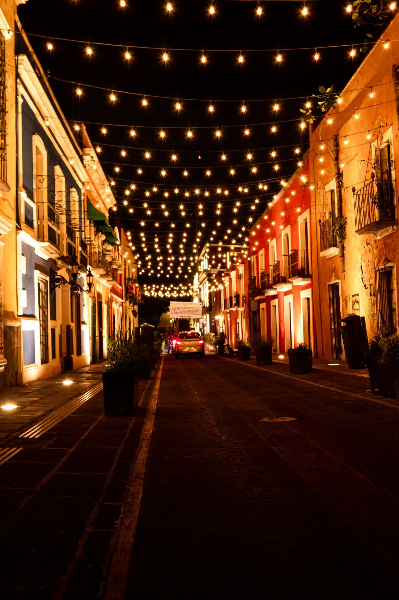

Luz de carril
- Cliente
- Ruta Norte, autobuses nocturnos
- Formato
- Comercial, 45 s
- Dirección
- Valeria Ochoa
- Año
- 2026
Rodamos el Periférico entre las 2 y las 4 de la mañana con una sola cámara en el techo del autobús. Ninguna luz fue agregada en post.
Casa Ámbar dirige y posproduce desde la Roma Norte, en Ciudad de México. Ocho proyectos entregados entre 2024 y 2026, para marcas, músicos y televisión pública.
Ver el reel completo


Rodamos el Periférico entre las 2 y las 4 de la mañana con una sola cámara en el techo del autobús. Ninguna luz fue agregada en post.
La promo del programa de madrugada: la avenida más larga de la ciudad, vacía, con la voz del locutor como único sonido.
Un solo plano secuencia en una vecindad de la Guerrero, iluminado con focos rojos de feria. 1,2 millones de reproducciones el primer mes.
Tres transportistas cuentan la carretera Sonoyta–Caborca desde la cabina. Premio del público en la Muestra de Cine de Hermosillo.
Filmado a 120 cuadros por segundo en el ensayo general del Teatro Arcos, sin cortar la función.
Casting real en un gimnasio de Tepito: ningún actor, doce boxeadores amateurs y su entrenador.
La noche de inauguración contada en vertical y en horizontal a la vez, con dos equipos cruzando la misma calle.
Esperamos tres semanas a la primera tormenta de junio. La lluvia es real; el farol lo pusimos nosotros.
Arrastra sobre las miniaturas para recorrer el reel.